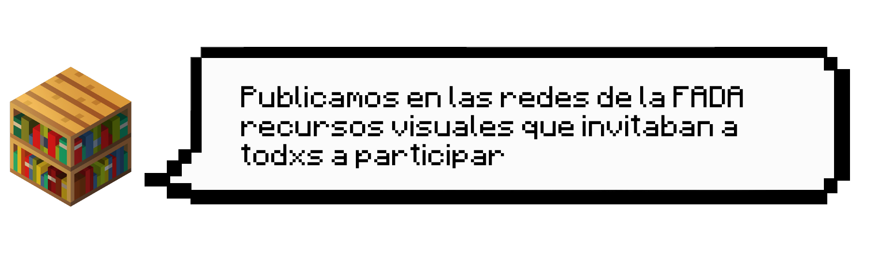
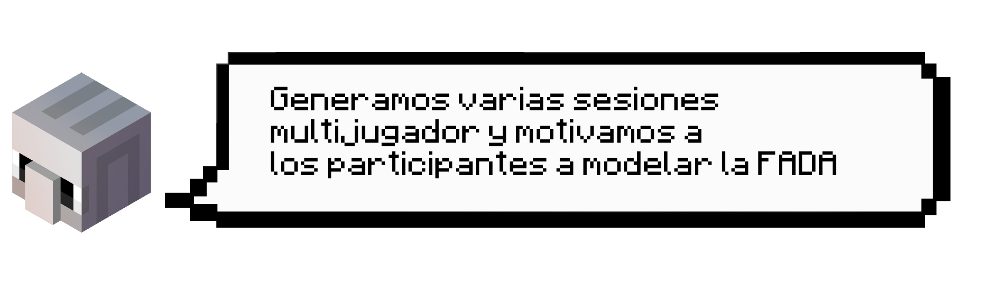

La crisis mundial que se ha desencadenado por la pandemia del COVID-19 ha obligado a acelerar la virtualización de muchas actividades, entre esos los espacios académicos. Sin embargo, aunque las plataformas como EVA o Zoom han apoyado el desarrollo de las clases, estas vías no son suficientes para la permanente construcción de la comunidad de la FADA.
Asimismo, reconocemos que uno de los puntos críticos de esta nueva vida, que por el momento nos obliga a aislarnos, es la falta de espacios para encontrarnos. Por esta razón, a través de la excusa de la reconstrucción de la FADA y con el fin de explorar nuevos formatos de encuentro, invitamos a estudiantes, docentes y administrativos de la facultad a ser parte de una experiencia participativa virtual en la versión educativa de Minecraft.
Asimismo, reconocemos que uno de los puntos críticos de esta nueva vida, que por el momento nos obliga a aislarnos, es la falta de espacios para encontrarnos. Por esta razón, a través de la excusa de la reconstrucción de la FADA y con el fin de explorar nuevos formatos de encuentro, invitamos a estudiantes, docentes y administrativos de la facultad a ser parte de una experiencia participativa virtual en la versión educativa de Minecraft.
¿Qué hicimos?



Bajo el lema de "Exploremos nuevos espacios de encuentro. ¡Vamos!, juntas y juntos, a construir la FADA". Convocamos a la comunidad FADA para recrear la Facultad de Arquitectura, Diseño y Artes de la PUCE en el ambiente de Minecraft. Durante este proceso alentamos a lxs participantes a explorar los límites de la camaradería virtual.
+info de la convocatoria bit.ly/bloqueFADA
+info de la convocatoria bit.ly/bloqueFADA
Resultados